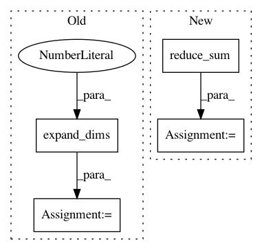

d1ac7b831ad36cd0e4bdd7980819f83208345148,gpflow/expectations.py,,_expectation,#Any#Any#Any#Any#Any#,92
Before Change
lengthscales = tf.zeros((D,), dtype=settings.tf_float) + kern.lengthscales
vec = tf.expand_dims(Xmu, 2) - tf.expand_dims(tf.transpose(Z), 0) // NxDxM
chols = tf.cholesky(tf.expand_dims(tf.matrix_diag(lengthscales ** 2), 0) + Xcov)
Lvec = tf.matrix_triangular_solve(chols, vec)
q = tf.reduce_sum(Lvec ** 2, [1])
chol_diags = tf.matrix_diag_part(chols) // N x D
half_log_dets = (tf.reduce_sum(tf.log(chol_diags), 1)
- tf.reduce_sum(tf.log(lengthscales))) // N,
After Change
exponent_mahalanobis = tf.exp(-0.5 * exponent_mahalanobis) // NxM
sqrt_det_L = tf.reduce_prod(lengthscales)
sqrt_det_L_plus_Xcov = tf.exp(tf.reduce_sum(tf.log(tf.matrix_diag_part(chol_L_plus_Xcov)), axis=1))
determinants = sqrt_det_L / sqrt_det_L_plus_Xcov // N
return kern.variance * (determinants[:, None] * exponent_mahalanobis)
In pattern: SUPERPATTERN
Frequency: 4
Non-data size: 4
Instances
Project Name: GPflow/GPflow
Commit Name: d1ac7b831ad36cd0e4bdd7980819f83208345148
Time: 2018-02-07
Author: alex.ialongo@gmail.com
File Name: gpflow/expectations.py
Class Name:
Method Name: _expectation
Project Name: GPflow/GPflow
Commit Name: 1d3e25c3ad4835ee298675f557e4c78bc8501c74
Time: 2017-03-06
Author: james.hensman@gmail.com
File Name: GPflow/ekernels.py
Class Name: RBF
Method Name: eKxz
Project Name: OpenNMT/OpenNMT-tf
Commit Name: 4d49910b3f0696102f813fb5ba451b934a4a579c
Time: 2021-03-25
Author: guillaumekln@users.noreply.github.com
File Name: opennmt/utils/losses.py
Class Name:
Method Name: cross_entropy_sequence_loss
Project Name: tensorflow/agents
Commit Name: 6f3a917e94edf2b96e4c151d698495799be5c9de
Time: 2020-06-26
Author: summeryue@google.com
File Name: tf_agents/agents/sac/sac_agent.py
Class Name: SacAgent
Method Name: alpha_loss